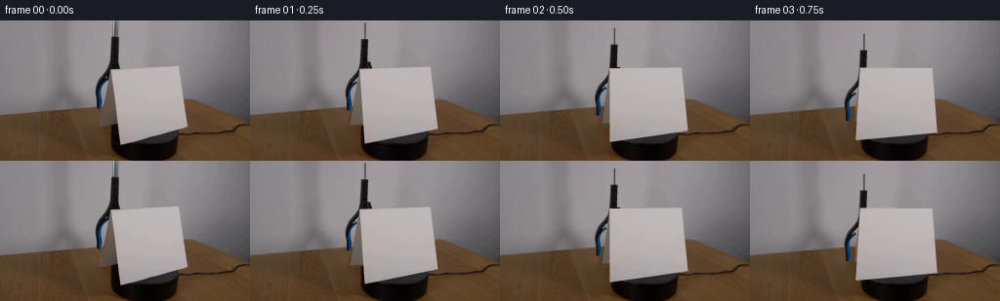
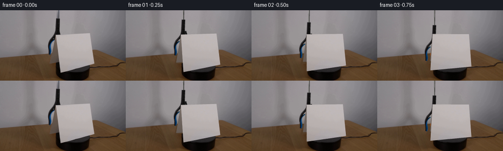
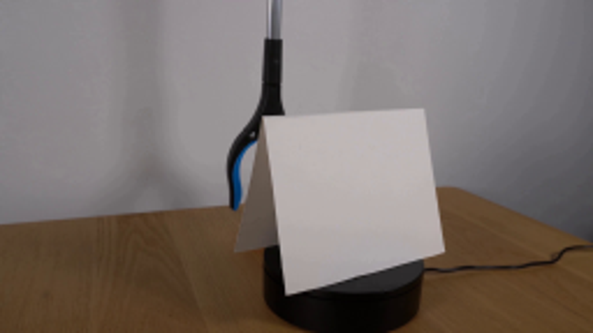
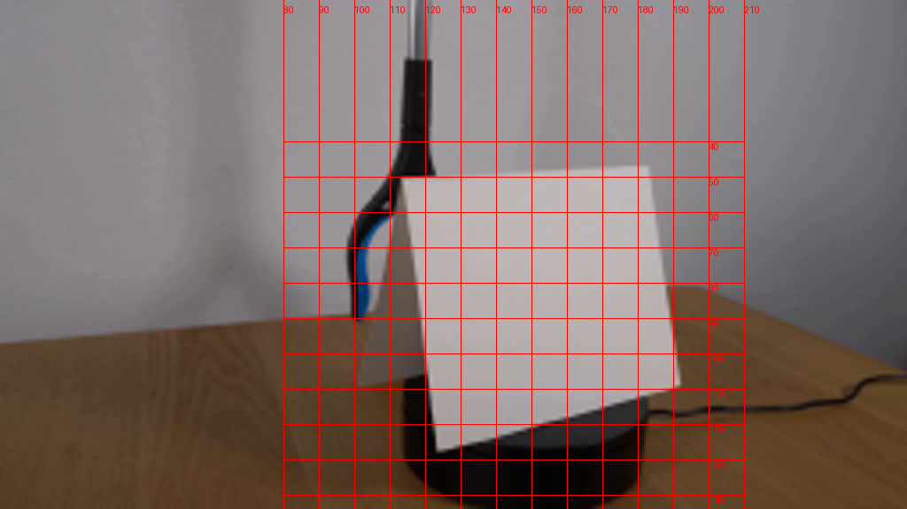
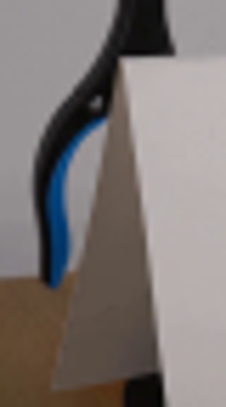
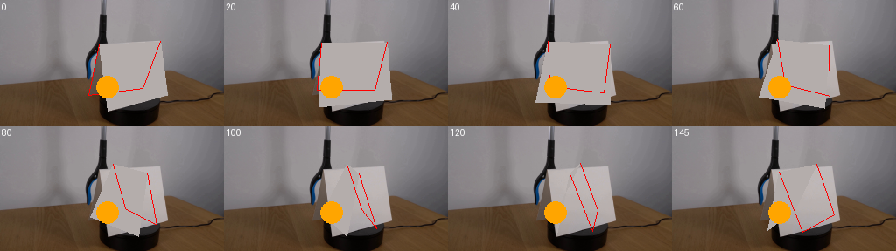
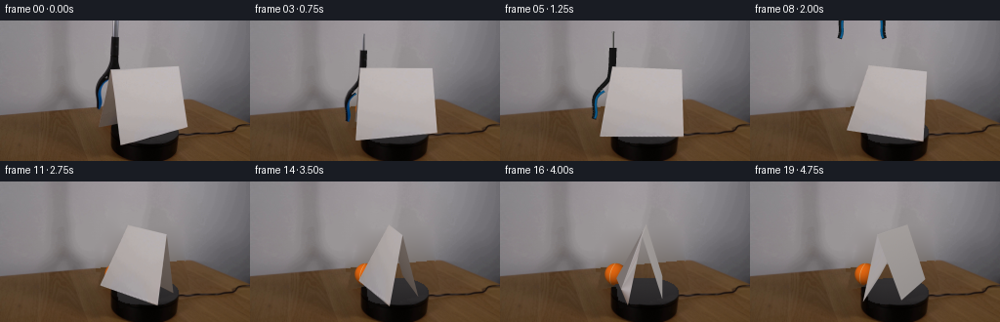
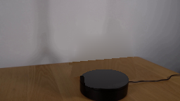
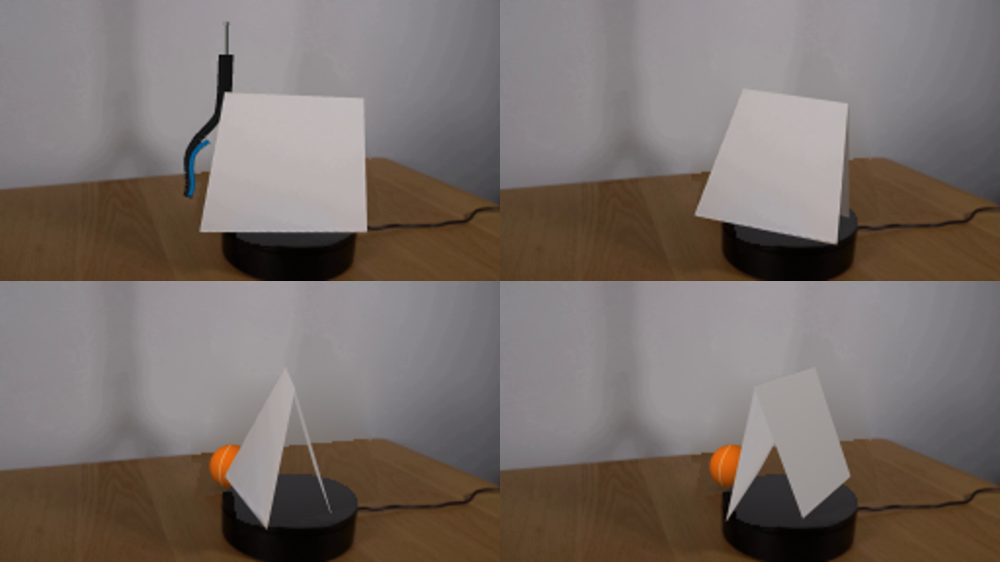

CODING AGENTS AS PIXEL WORLD MODELS
traex/GPT-6-Astra · 0004
点击播放 · 原生 RGB 像素
逐轮保存的候选
回放视频、检查图与代码变化。
每份候选均可单独播放。实际图片检查记录在下方工具轨迹中。
候选 01播放与检查图
点击播放 · 原生 RGB 像素

展开代码变化
--- 上一保存版本
+++ 本次保存版本
@@ -0,0 +1,267 @@
+from pathlib import Path
+import math
+import numpy as np
+import cv2
+from PIL import Image, ImageDraw
+from scipy import sparse
+from scipy.sparse.linalg import spsolve
+from scipy.ndimage import gaussian_filter
+import artifact_io
+
+ROOT=Path(__file__).resolve().parent
+S=4; W=256; H=144
+src=np.array(Image.open(ROOT/'first_frame.png').convert('RGB'))
+rng=np.random.default_rng(1847)
+Y,X=np.mgrid[:H,:W]
+front=np.float32([[113,50.5],[182.8,47.0],[191.5,109.5],[123,127.5]])
+old=np.zeros((H,W),np.uint8)
+cv2.fillPoly(old,[np.round(np.r_[front,[[119.6,105.0],[101,109.2]]]).astype(np.int32)],255)
+tooloutline=np.array([[115,-2],[121,-2],[120.6,16],[122,17],[121,37],[121,44],[124,50],[114,51],[112,57],[108,62],[104,67],[103,72],[103.8,81],[104.3,85],[103,91],[99,91],[98.7,81],[98,75],[97.7,69],[100,62],[104,57],[108,52],[111,45],[112.4,38],[113,17],[115,17]],np.int32)
+cv2.fillPoly(old,[tooloutline],255)
+old=cv2.dilate(old,np.ones((3,3),np.uint8),iterations=1)
+horizon=np.where(X<187,97.1-.089*X,80.45+.457*(X-187))
+wall=Y<horizon
+
+def design(x,y,degree=3):
+ x=(x-128)/128; y=(y-72)/72
+ return np.stack([x**i*y**j for i in range(degree+1) for j in range(degree+1-i)],-1)
+D=design(X,Y)
+valid=wall&(old==0)
+coef=np.linalg.lstsq(D[valid],src[valid].astype(float),rcond=None)[0]
+wallfit=D@coef
+# Harmonic completion keeps the original wall illumination continuous at the moving occluder.
+wallwork=src.astype(float).copy(); wallwork[~wall]=wallfit[~wall]
+holes=(old>0)&wall
+ids=-np.ones((H,W),int); ids[holes]=np.arange(holes.sum())
+ys,xs=np.where(holes); rr=[];cc=[];vv=[];b=np.zeros((len(ys),3))
+for k,(y,x) in enumerate(zip(ys,xs)):
+ n=0
+ for yy,xx in [(y-1,x),(y+1,x),(y,x-1),(y,x+1)]:
+ if 0<=yy<H and 0<=xx<W:
+ n+=1
+ if holes[yy,xx]:rr.append(k);cc.append(ids[yy,xx]);vv.append(-1.)
+ else:b[k]+=wallwork[yy,xx]
+ rr.append(k);cc.append(k);vv.append(float(n))
+A=sparse.csr_matrix((vv,(rr,cc)),shape=(len(ys),len(ys)))
+wallwork[holes]=spsolve(A,b)
+# The revealed tabletop uses only texture from the unoccluded left side of this photograph.
+base_exclude=(((X-148)/39)**2+((Y-122)/26)**2)<1.05
+valid=(Y>horizon+2)&(old==0)&(~base_exclude)&(X<236)
+# Robust low-order tabletop lighting fit, avoiding the power cord.
+TD=design(X,Y,2)
+sel=valid.copy()
+for _ in range(4):
+ tc=np.linalg.lstsq(TD[sel],src[sel],rcond=None)[0]
+ residual=np.linalg.norm(src-TD@tc,axis=2)
+ sel=valid&(residual<22)
+tablefit=TD@tc
+low=cv2.GaussianBlur(src.astype(np.float32),(0,0),3.7)
+texture=src.astype(np.float32)-low
+mx=((X-97)*.79+2).astype(np.float32)
+my=(98+(Y-horizon)*.95).astype(np.float32)
+wood=cv2.remap(texture,mx,my,cv2.INTER_LINEAR,borderMode=cv2.BORDER_REFLECT_101)
+table=tablefit+wood*.72
+# Restore the parts of the stationary motorized platform concealed in frame zero.
+ell=((X-147.6)/34.8)**2+((Y-112.3)/14.2)**2
+side=(((X-147.6)/34.8)**2+((Y-130.5)/14.2)**2<1)&(Y>=112.3)
+side|=(np.abs(X-147.6)<34.8)&(Y>=112.3)&(Y<=130.5)
+base=table.copy()
+noise=rng.normal(0,.48,(H,W))
+for c,v in enumerate([8.0,5.9,4.6]):
+ vals=v+2.2*np.cos((X-125)*.1)+noise
+ base[:,:,c]=np.where(side,vals,base[:,:,c])
+top=ell<=1
+for c,offset in enumerate([0,-1.8,-.4]):
+ shade=47.2-.50*(Y-109)+offset+noise*.6
+ shade-=1.5*np.exp(-((X-121)/9)**2)
+ shade-=4*np.clip((ell-.87)/.13,0,1)
+ base[:,:,c]=np.where(top,shade,base[:,:,c])
+clean=np.where(wall[:,:,None],wallwork,base)
+# Keep all genuinely visible static pixels, including the table grain and original platform.
+bg=src.astype(float).copy(); bg[old>0]=clean[old>0]
+bg=np.uint8(np.clip(bg,0,255))
+Image.fromarray(bg).save(ROOT/'.tmp/background.png')
+bg_hi=cv2.resize(bg,(W*S,H*S),interpolation=cv2.INTER_CUBIC)
+
+# Calibrated perspective geometry for the folded cardstock. Its projected vertices
+# at zero angle are measured on the supplied first frame.
+f=289.85748167; R=7.58209291; elev=np.deg2rad(20.29562274)
+cx=147.89684894;cy=110.07885357;height=1.58610869
+
+def unproject(u,v,z):
+ q=(cy-v)/f
+ y=(q*R-z*(q*np.sin(elev)+np.cos(elev)))/(np.sin(elev)-q*np.cos(elev))
+ dep=R+y*np.cos(elev)-z*np.sin(elev)
+ return [(u-cx)*dep/f,y,z]
+verts=np.array([unproject(*front[0],height),unproject(*front[1],height),unproject(*front[2],0),unproject(*front[3],0),unproject(101,109,0)])
+verts=np.r_[verts,[verts[4]+verts[1]-verts[0]]]
+
+def project(angle):
+ a=np.deg2rad(angle)
+ rot=np.array([[np.cos(a),np.sin(a),0],[-np.sin(a),np.cos(a),0],[0,0,1]])
+ v=verts@rot.T
+ dep=R+v[:,1]*np.cos(elev)-v[:,2]*np.sin(elev)
+ uv=np.stack([cx+f*v[:,0]/dep,cy-f*(v[:,1]*np.sin(elev)+v[:,2]*np.cos(elev))/dep],1)
+ return uv,dep,v
+
+# Rectified real cardstock texture, avoiding background contamination at its edges.
+TW,TH=300,310
+rect=np.float32([[0,0],[TW-1,0],[TW-1,TH-1],[0,TH-1]])
+inset=front.copy(); mid=front.mean(0);inset=mid+(front-mid)*.980
+M=cv2.getPerspectiveTransform(inset,rect)
+cardtex=cv2.warpPerspective(src,M,(TW,TH),flags=cv2.INTER_CUBIC,borderMode=cv2.BORDER_REFLECT)
+# Fill-in rear/inside surfaces have the same slight photographic paper grain.
+grain=cardtex.astype(float)-cv2.GaussianBlur(cardtex.astype(float),(0,0),4)
+yy,xx=np.mgrid[:TH,:TW]
+
+# Source-textured silhouette of the tool, supplemented only on its initially hidden jaw.
+hi_src=cv2.resize(src,(W*S,H*S),interpolation=cv2.INTER_CUBIC)
+
+def bez(p,n=36):
+ p=np.array(p,float);t=np.linspace(0,1,n)[:,None]
+ return (1-t)**3*p[0]+3*(1-t)**2*t*p[1]+3*(1-t)*t*t*p[2]+t**3*p[3]
+leftpath=np.r_[bez([[116,40],[115,52],[105,56],[101.7,64]]),bez([[101.7,64],[97,72],[103.5,79],[100.7,89.7]])]
+bluepath=np.r_[bez([[109.4,61.2],[103.3,64.9],[101.5,68],[101.7,73.3]]),bez([[101.7,73.3],[101.8,79],[104.3,83.1],[102.1,89.2]])]
+
+def tool_sprite(opening):
+ im=Image.new('RGBA',(W*S,H*S));d=ImageDraw.Draw(im)
+ def line(points,fill,width):
+ d.line([tuple(p*S) for p in np.array(points)],fill=fill,width=round(width*S),joint='curve')
+ def poly(points,fill):d.polygon([tuple(np.array(p)*S) for p in points],fill=fill)
+ # Silver rod extends out of the camera view throughout placement.
+ line([[118.1,-90],[117.5,20]],(83,83,81,255),2.35)
+ line([[117.55,-90],[116.97,20]],(157,155,151,255),.85)
+ line([[119,-90],[118.4,20]],(51,50,48,255),.42)
+ poly([[113.8,16.8],[121,16.9],[120.3,36.6],[120.7,43.7],[123.1,49.7],[111.1,49.8],[112.4,43.0],[113.1,35.8]],(18,18,18,255))
+ line([[115.1,18],[114.8,34],[114.4,39]],(27,27,27,255),.85)
+ line([[113.2,36.9],[120.2,37.1]],(10,10,10,255),.5)
+ for mirror in [True,False]:
+ q=leftpath.copy();b=bluepath.copy()
+ q[:,0]-=opening*np.clip((q[:,1]-47)/41,0,1)
+ b[:,0]-=opening*np.clip((b[:,1]-47)/41,0,1)
+ if mirror:
+ q[:,0]=237.3-q[:,0]; b[:,0]=237.3-b[:,0]
+ line(q,(18,19,19,255),4.6)
+ line(q+[-.65,0],(26,28,29,255),1.0)
+ line(b,(10,72,108,255),2.6)
+ line(b+[-.30,0],(11,91,142,255),1.45)
+ # On the fully observed parts retain their exact natural photographic texture.
+ # This includes the steel shaft, housing, and outer left gripping arm.
+ p_mask=Image.new('L',(W*S,H*S));pd=ImageDraw.Draw(p_mask)
+ if opening<.05:
+ pd.polygon([tuple(np.array(p)*S) for p in tooloutline],fill=255)
+ # do not sample the white card behind the fork
+ cardmask=Image.new('L',p_mask.size); cd=ImageDraw.Draw(cardmask)
+ cd.polygon([tuple(np.array(p)*S) for p in np.r_[front,[[119.6,105],[101,109.2]]]],fill=255)
+ a=np.array(p_mask).astype(float)/255*(1-np.array(cardmask).astype(float)/255)
+ existing=np.array(im)
+ # retain the analytic silhouette; transfer photographed colors inside it
+ a*=existing[:,:,3]/255
+ existing[:,:,:3]=np.uint8(existing[:,:,:3]*(1-a[:,:,None])+hi_src*a[:,:,None])
+ im=Image.fromarray(existing)
+ return np.array(im)
+
+def over(dst,rgba):
+ a=rgba[:,:,3:4].astype(float)/255
+ return np.uint8(np.clip(dst*(1-a)+rgba[:,:,:3]*a,0,255))
+
+def render_tool(im,shift,dx,opening):
+ rgba=tool_sprite(opening)
+ M=np.float32([[1,0,dx*S],[0,1,shift*S]])
+ rgba=cv2.warpAffine(rgba,M,(W*S,H*S),flags=cv2.INTER_LINEAR,borderMode=cv2.BORDER_CONSTANT)
+ return over(im,rgba)
+
+# A softly lit orange felt tennis ball with curved ivory seam and fine surface texture.
+BALLSIZE=160
+by,bx=np.mgrid[:BALLSIZE,:BALLSIZE]
+q=(bx-(BALLSIZE-1)/2)/(BALLSIZE/2-2);r=-(by-(BALLSIZE-1)/2)/(BALLSIZE/2-2)
+r2=q*q+r*r; z=np.sqrt(np.maximum(0,1-r2))
+light=np.maximum(0,-.40*q+.53*r+.744*z)
+felt=rng.normal(0,1.8,(BALLSIZE,BALLSIZE));felt=gaussian_filter(felt,.4)
+ball=np.zeros((BALLSIZE,BALLSIZE,4),np.uint8)
+color=np.array([221,101,17.])
+shade=.43+.55*light+.07*z
+rgb=color[None,None,:]*shade[:,:,None]+felt[:,:,None]
+# Tennis-ball seam as two gently bending arcs on the spherical surface.
+arc=q+.52-.31*r*r-.18*r
+seam=np.exp(-(arc/.026)**2)*.86
+rgb=rgb*(1-seam[:,:,None])+np.array([215,191,139])[None,None,:]*shade[:,:,None]*seam[:,:,None]
+ball[:,:,:3]=np.uint8(np.clip(rgb,0,255))
+ball[:,:,3]=np.uint8(np.clip((1-np.sqrt(r2))*(BALLSIZE/2-2)+.5,0,1)*255)
+
+def add_ball(im,center,radius):
+ size=round(2*radius*S)
+ sp=cv2.resize(ball,(size,size),interpolation=cv2.INTER_AREA)
+ x0=round(center[0]*S-size/2); y0=round(center[1]*S-size/2)
+ rgba=np.zeros((H*S,W*S,4),np.uint8);rgba[y0:y0+size,x0:x0+size]=sp
+ return over(im,rgba)
+
+# Texture mapping preserves the paper's real details under perspective changes.
+def add_paper(im,uv,depth,v,angle):
+ faces=[[0,1,2,3],[0,1,5,4]]
+ for face in sorted(faces,key=lambda ids:np.mean(depth[ids]),reverse=True):
+ if face==faces[0]:
+ # slow light change as the face rotates underneath a fixed room light
+ factor=1+.035*np.sin(np.deg2rad(angle))-.17*(1-np.cos(np.deg2rad(angle)))/2
+ tex=cardtex.astype(float)*factor
+ else:
+ # Inside of the tent is shaded; its outward face becomes visible after the turn.
+ a,b,c=v[face[0]],v[face[1]],v[face[2]]
+ n=np.cross(b-a,c-a);n/=np.linalg.norm(n)
+ view=np.array([0,-np.cos(elev),np.sin(elev)])
+ exterior=np.dot(n,view)>0
+ if exterior:
+ value=166-8*np.sin(np.deg2rad(angle))
+ tex=np.array([value+3,value-2,value-4])[None,None,:]+grain*.65-(yy[:,:,None]/TH)*12
+ else:
+ # indirect warm table reflection within the folded sheet
+ value=122-11*np.sin(np.deg2rad(angle))
+ tex=np.array([value,value-10,value-16])[None,None,:]+grain*.60-(yy[:,:,None]/TH)*21
+ tex=np.uint8(np.clip(tex,0,255))
+ Hm=cv2.getPerspectiveTransform(rect,(uv[face]*S).astype(np.float32))
+ warped=cv2.warpPerspective(tex,Hm,(W*S,H*S),flags=cv2.INTER_CUBIC,borderMode=cv2.BORDER_REPLICATE)
+ mask=np.zeros((H*S,W*S),np.uint8)
+ cv2.fillConvexPoly(mask,np.round(uv[face]*S).astype(np.int32),255,lineType=cv2.LINE_AA)
+ alpha=mask[:,:,None].astype(float)/255
+ im=np.uint8(im*(1-alpha)+warped*alpha)
+ # Subpixel top fold highlight: a paper edge rather than an outlined polygon.
+ edge=Image.fromarray(im);dr=ImageDraw.Draw(edge)
+ dr.line([tuple(uv[k]*S) for k in [0,1]],fill=(175,170,167),width=1)
+ return np.array(edge)
+
+def smooth(u):return np.clip(u,0,1)**2*(3-2*np.clip(u,0,1))
+frames=[src.copy()]
+for i in range(1,20):
+ t=i/4
+ angle=28*t
+ uv,depth,v=project(angle)
+ im=bg_hi.copy()
+ # The ball is lowered in the concealed space behind the rotating card and released.
+ lower=smooth(t/1.05)
+ bc=(120.3-1.6*lower,77.9+17.1*lower)
+ rad=11.65
+ # Contact shadow stays on the wood after release. Most of it is initially occluded.
+ sy,sx=np.mgrid[:H*S,:W*S]
+ shadow=np.exp(-(((sx/S-bc[0])/11)**2+((sy/S-106.3)/2.9)**2)*1.55)*.28*lower
+ # only tabletop, not the stationary platform
+ ground=(sy/S>np.where(sx/S<187,97.1-.089*sx/S,80.45+.457*(sx/S-187)))
+ shadow*=ground
+ im=np.uint8(im*(1-shadow[:,:,None]))
+ im=add_ball(im,bc,rad)
+ if t<=1.05:shift=17.1*lower;dx=-1.6*lower
+ else:
+ u=(t-1.05)/1.65
+ shift=17.1-144*smooth(u);dx=-1.6-4*smooth(u)
+ opening=5*smooth((t-1.05)/.35)
+ if shift>-98:im=render_tool(im,shift,dx,opening)
+ # Restore the near lip of the platform in front of the ball's contact point.
+ # This keeps the ball on the table behind the base, not floating on its upper disc.
+ topmask=cv2.resize((top.astype(np.uint8)*255),(W*S,H*S),interpolation=cv2.INTER_LINEAR).astype(float)/255
+ near=(sy/S>104.9)
+ occ=topmask*near
+ im=np.uint8(im*(1-occ[:,:,None])+bg_hi*occ[:,:,None])
+ im=add_paper(im,uv,depth,v,angle)
+ out=cv2.resize(im,(W,H),interpolation=cv2.INTER_AREA)
+ frames.append(out)
+frames=np.stack(frames).astype(np.uint8)
+artifact_io.save(frames,ROOT)
候选 02播放与检查图
点击播放 · 原生 RGB 像素

展开代码变化
--- 上一保存版本 +++ 本次保存版本 @@ -76,7 +76,10 @@ shade-=1.5*np.exp(-((X-121)/9)**2) shade-=4*np.clip((ell-.87)/.13,0,1) base[:,:,c]=np.where(top,shade,base[:,:,c]) -clean=np.where(wall[:,:,None],wallwork,base) +edgeblend=np.clip(horizon-Y+.5,0,1) +# Antialiased, continuous table/wall boundary across the newly revealed region. +wall_full=wallwork.copy();wall_full[~wall]=wallfit[~wall] +clean=wall_full*edgeblend[:,:,None]+base*(1-edgeblend[:,:,None]) # Keep all genuinely visible static pixels, including the table grain and original platform. bg=src.astype(float).copy(); bg[old>0]=clean[old>0] bg=np.uint8(np.clip(bg,0,255)) @@ -157,6 +160,7 @@ existing=np.array(im) # retain the analytic silhouette; transfer photographed colors inside it a*=existing[:,:,3]/255 + a[:17*S]=0 # the rod continues above the original crop when the tool descends existing[:,:,:3]=np.uint8(existing[:,:,:3]*(1-a[:,:,None])+hi_src*a[:,:,None]) im=Image.fromarray(existing) return np.array(im)
候选 03播放与检查图
点击播放 · 原生 RGB 像素

展开代码变化
--- 上一保存版本 +++ 本次保存版本 @@ -170,6 +170,11 @@ return np.uint8(np.clip(dst*(1-a)+rgba[:,:,:3]*a,0,255)) def render_tool(im,shift,dx,opening): + if shift>0: + extended=Image.fromarray(im); ed=ImageDraw.Draw(extended) + for offset,color,width in [(0,(83,83,81),2.35),(-.55,(157,155,151),.85),(.9,(51,50,48),.42)]: + ed.line([((118.0+dx+offset)*S,-S),((117.6+dx+offset)*S,(17+shift)*S)],fill=color,width=round(width*S)) + im=np.array(extended) rgba=tool_sprite(opening) M=np.float32([[1,0,dx*S],[0,1,shift*S]]) rgba=cv2.warpAffine(rgba,M,(W*S,H*S),flags=cv2.INTER_LINEAR,borderMode=cv2.BORDER_CONSTANT)
可观测工具轨迹
实际执行的命令与返回图片。
命令 1exit 0
/bin/bash -lc "ls -la && cat GENERATION_RULES.md && printf '\\n---PROMPT---\\n' && cat prompt.txt"
命令 2exit 0
/bin/bash -lc "cat artifact_io.py && python - <<'PY'
from PIL import Image
im=Image.open('first_frame.png'); print(im.size); im.resize((1024,576)).save('.tmp/enlarged.png')
PY"命令 3exit 0
/bin/bash -lc "python - <<'PY'
import importlib.util
for m in ['cv2','numpy','PIL','scipy']:
print(m, bool(importlib.util.find_spec(m)))
from PIL import Image,ImageDraw
im=Image.open('first_frame.png').resize((1024,576)); d=ImageDraw.Draw(im)
for x in range(80,211,10):
d.line([(x*4,0),(x*4,576)],fill=(255,0,0),width=1);d.text((x*4,5),str(x),fill=(255,0,0))
for y in range(40,145,10):
d.line([(320,y*4),(840,y*4)],fill=(255,0,0),width=1);d.text((800,y*4),str(y),fill=(255,0,0))
im.save('.tmp/grid.png')
PY"命令 4exit 0
/bin/bash -lc "cat > .tmp/fit.py <<'PY'
import numpy as np
from scipy.optimize import least_squares
obs=np.array([[113.,51.],[182.5,47.],[191.5,109.5],[123.,127.5],[101.,109.]])
def proj(p,ret=False):
f,R,e,theta,d,h,cx,cy=p;e=np.deg2rad(e);theta=np.deg2rad(theta)
X=np.array([[-1,0,h],[1,0,h],[1,-d,0],[-1,-d,0],[-1,d,0]],float)
x=X[:,0]*np.cos(theta)-X[:,1]*np.sin(theta); y=X[:,0]*np.sin(theta)+X[:,1]*np.cos(theta);z=X[:,2]
depth=R+y*np.cos(e)-z*np.sin(e)
uv=np.array([cx+f*x/depth,cy-f*(y*np.sin(e)+z*np.cos(e))/depth]).T
return (uv,depth) if ret else uv
p0=[240,7,30,25,.6,1.8,146,115]
def fun(p):
return np.r_[(proj(p)-obs).ravel(),(p[0]-240)/100,(p[-2]-146)/10,(p[-1]-114)/10]
r=least_squares(fun,p0,bounds=([100,3,10,5,.1,1,130,105],[600,20,60,60,1.5,3,165,125]),max_nfev=20000)
print(r.x, r.cost);print(proj(r.x));np.save('.tmp/camera.npy',r.x)
PY
python .tmp/fit.py"命令 5exit 0
/bin/bash -lc "python - <<'PY'
from PIL import Image
im=Image.open('first_frame.png'); im.crop((92,40,132,112)).resize((320,576)).save('.tmp/grab.png')
PY"命令 6exit 0
/bin/bash -lc "python - <<'PY'
exec(open('.tmp/fit.py').read().split('p0=')[0]);p=np.load('.tmp/camera.npy'); f,R,e,th,d,h,cx,cy=p;e=np.deg2rad(e)
for u,v,z in [(113,51,h),(182.5,47,h),(191.5,109.5,0),(123,127.5,0),(101,109,0),(172,96,0)]:
q=(cy-v)/f;y=(q*R-z*(q*np.sin(e)+np.cos(e)))/(np.sin(e)-q*np.cos(e));depth=R+y*np.cos(e)-z*np.sin(e);x=(u-cx)*depth/f;print(u,v, x,y,z)
PY"命令 7exit 0
/bin/bash -lc "python - <<'PY'
from PIL import Image
im=Image.open('first_frame.png')
for y in [100,105,110,115,120,125,130,135,140]:
print(y,[(x,im.getpixel((x,y))) for x in [110,114,118,122,130,145,160,175,180,184]])
PY"命令 8exit 0
/bin/bash -lc "cat > .tmp/testgeom.py <<'PY'
import numpy as np
from PIL import Image,ImageDraw
p=np.load('.tmp/camera.npy');f,R,e,th,d,h,cx,cy=p;e=np.deg2rad(e)
def inv(u,v,z):
q=(cy-v)/f;y=(q*R-z*(q*np.sin(e)+np.cos(e)))/(np.sin(e)-q*np.cos(e));dep=R+y*np.cos(e)-z*np.sin(e);return [(u-cx)*dep/f,y,z]
X=np.array([inv(113,51,h),inv(183,47,h),inv(191.5,109.5,0),inv(123,127.5,0),inv(101,109,0)]);X=np.r_[X, [X[4]+X[1]-X[0]]]
def proj(X,angle):
a=np.deg2rad(angle);x=X[:,0]*np.cos(a)+X[:,1]*np.sin(a);y=-X[:,0]*np.sin(a)+X[:,1]*np.cos(a);z=X[:,2];dep=R+y*np.cos(e)-z*np.sin(e);return np.stack([cx+f*x/dep,cy-f*(y*np.sin(e)+z*np.cos(e))/dep],1)
im=Image.new('RGB',(256*4,144*2));bg=Image.open('first_frame.png')
for i,a in enumerate([0,20,40,60,80,100,120,145]):
cell=bg.copy();d=ImageDraw.Draw(cell);uv=proj(X,a);d.polygon([tuple(q) for q in uv[:4]], fill=(180,173,171));d.line([tuple(q) for q in uv[[0,4,5,1]]],fill='red',width=1);d.ellipse((110,87,135,112),fill='orange');d.text((2,2),str(a));im.paste(cell,(i%4*256,i//4*144))
im.save('.tmp/geom.png')
PY
python .tmp/testgeom.py"命令 9exit 0
/bin/bash -lc "cat > generate.py <<'PY'
from pathlib import Path
import math
import numpy as np
import cv2
from PIL import Image, ImageDraw
from scipy import sparse
from scipy.sparse.linalg import spsolve
from scipy.ndimage import gaussian_filter
import artifact_io
ROOT=Path(__file__).resolve().parent
S=4; W=256; H=144
src=np.array(Image.open(ROOT/'first_frame.png').convert('RGB'))
rng=np.random.default_rng(1847)
Y,X=np.mgrid[:H,:W]
front=np.float32([[113,50.5],[182.8,47.0],[191.5,109.5],[123,127.5]])
old=np.zeros((H,W),np.uint8)
cv2.fillPoly(old,[np.round(np.r_[front,[[119.6,105.0],[101,109.2]]]).astype(np.int32)],255)
tooloutline=np.array([[115,-2],[121,-2],[120.6,16],[122,17],[121,37],[121,44],[124,50],[114,51],[112,57],[108,62],[104,67],[103,72],[103.8,81],[104.3,85],[103,91],[99,91],[98.7,81],[98,75],[97.7,69],[100,62],[104,57],[108,52],[111,45],[112.4,38],[113,17],[115,17]],np.int32)
cv2.fillPoly(old,[tooloutline],255)
old=cv2.dilate(old,np.ones((3,3),np.uint8),iterations=1)
horizon=np.where(X<187,97.1-.089*X,80.45+.457*(X-187))
wall=Y<horizon
def design(x,y,degree=3):
x=(x-128)/128; y=(y-72)/72
return np.stack([x**i*y**j for i in range(degree+1) for j in range(degree+1-i)],-1)
D=design(X,Y)
valid=wall&(old==0)
coef=np.linalg.lstsq(D[valid],src[valid].astype(float),rcond=None)[0]
wallfit=D@coef
# Harmonic completion keeps the original wall illumination continuous at the moving occluder.
wallwork=src.astype(float).copy(); wallwork[~wall]=wallfit[~wall]
holes=(old>0)&wall
ids=-np.ones((H,W),int); ids[holes]=np.arange(holes.sum())
ys,xs=np.where(holes); rr=[];cc=[];vv=[];b=np.zeros((len(ys),3))
for k,(y,x) in enumerate(zip(ys,xs)):
n=0
for yy,xx in [(y-1,x),(y+1,x),(y,x-1),(y,x+1)]:
if 0<=yy<H and 0<=xx<W:
n+=1
if holes[yy,xx]:rr.append(k);cc.append(ids[yy,xx]);vv.append(-1.)
else:b[k]+=wallwork[yy,xx]
rr.append(k);cc.append(k);vv.append(float(n))
A=sparse.csr_matrix((vv,(rr,cc)),shape=(len(ys),len(ys)))
wallwork[holes]=spsolve(A,b)
# The revealed tabletop uses only texture from the unoccluded left side of this photograph.
base_exclude=(((X-148)/39)**2+((Y-122)/26)**2)<1.05
valid=(Y>horizon+2)&(old==0)&(~base_exclude)&(X<236)
# Robust low-order tabletop lighting fit, avoiding the power cord.
TD=design(X,Y,2)
sel=valid.copy()
for _ in range(4):
tc=np.linalg.lstsq(TD[sel],src[sel],rcond=None)[0]
residual=np.linalg.norm(src-TD@tc,axis=2)
sel=valid&(residual<22)
tablefit=TD@tc
low=cv2.GaussianBlur(src.astype(np.float32),(0,0),3.7)
texture=src.astype(np.float32)-low
mx=((X-97)*.79+2).astype(np.float32)
my=(98+(Y-horizon)*.95).astype(np.float32)
wood=cv2.remap(texture,mx,my,cv2.INTER_LINEAR,borderMode=cv2.BORDER_REFLECT_101)
table=tablefit+wood*.72
# Restore the parts of the stationary motorized platform concealed in frame zero.
ell=((X-147.6)/34.8)**2+((Y-112.3)/14.2)**2
side=(((X-147.6)/34.8)**2+((Y-130.5)/14.2)**2<1)&(Y>=112.3)
side|=(np.abs(X-147.6)<34.8)&(Y>=112.3)&(Y<=130.5)
base=table.copy()
noise=rng.normal(0,.48,(H,W))
for c,v in enumerate([8.0,5.9,4.6]):
vals=v+2.2*np.cos((X-125)*.1)+noise
base[:,:,c]=np.where(side,vals,base[:,:,c])
top=ell<=1
for c,offset in enumerate([0,-1.8,-.4]):
shade=47.2-.50*(Y-109)+offset+noise*.6
shade-=1.5*np.exp(-((X-121)/9)**2)
shade-=4*np.clip((ell-.87)/.13,0,1)
base[:,:,c]=np.where(top,shade,base[:,:,c])
clean=np.where(wall[:,:,None],wallwork,base)
# Keep all genuinely visible static pixels, including the table grain and original platform.
bg=src.astype(float).copy(); bg[old>0]=clean[old>0]
bg=np.uint8(np.clip(bg,0,255))
Image.fromarray(bg).save(ROOT/'.tmp/background.png')
bg_hi=cv2.resize(bg,(W*S,H*S),interpolation=cv2.INTER_CUBIC)
# Calibrated perspective geometry for the folded cardstock. Its projected vertices
# at zero angle are measured on the supplied first frame.
f=289.85748167; R=7.58209291; elev=np.deg2rad(20.29562274)
cx=147.89684894;cy=110.07885357;height=1.58610869
def unproject(u,v,z):
q=(cy-v)/f
y=(q*R-z*(q*np.sin(elev)+np.cos(elev)))/(np.sin(elev)-q*np.cos(elev))
dep=R+y*np.cos(elev)-z*np.sin(elev)
return [(u-cx)*dep/f,y,z]
verts=np.array([unproject(*front[0],height),unproject(*front[1],height),unproject(*front[2],0),unproject(*front[3],0),unproject(101,109,0)])
verts=np.r_[verts,[verts[4]+verts[1]-verts[0]]]
def project(angle):
a=np.deg2rad(angle)
rot=np.array([[np.cos(a),np.sin(a),0],[-np.sin(a),np.cos(a),0],[0,0,1]])
v=verts@rot.T
dep=R+v[:,1]*np.cos(elev)-v[:,2]*np.sin(elev)
uv=np.stack([cx+f*v[:,0]/dep,cy-f*(v[:,1]*np.sin(elev)+v[:,2]*np.cos(elev))/dep],1)
return uv,dep,v
# Rectified real cardstock texture, avoiding background contamination at its edges.
TW,TH=300,310
rect=np.float32([[0,0],[TW-1,0],[TW-1,TH-1],[0,TH-1]])
inset=front.copy(); mid=front.mean(0);inset=mid+(front-mid)*.980
M=cv2.getPerspectiveTransform(inset,rect)
cardtex=cv2.warpPerspective(src,M,(TW,TH),flags=cv2.INTER_CUBIC,borderMode=cv2.BORDER_REFLECT)
# Fill-in rear/inside surfaces have the same slight photographic paper grain.
grain=cardtex.astype(float)-cv2.GaussianBlur(cardtex.astype(float),(0,0),4)
yy,xx=np.mgrid[:TH,:TW]
# Source-textured silhouette of the tool, supplemented only on its initially hidden jaw.
hi_src=cv2.resize(src,(W*S,H*S),interpolation=cv2.INTER_CUBIC)
def bez(p,n=36):
p=np.array(p,float);t=np.linspace(0,1,n)[:,None]
return (1-t)**3*p[0]+3*(1-t)**2*t*p[1]+3*(1-t)*t*t*p[2]+t**3*p[3]
leftpath=np.r_[bez([[116,40],[115,52],[105,56],[101.7,64]]),bez([[101.7,64],[97,72],[103.5,79],[100.7,89.7]])]
bluepath=np.r_[bez([[109.4,61.2],[103.3,64.9],[101.5,68],[101.7,73.3]]),bez([[101.7,73.3],[101.8,79],[104.3,83.1],[102.1,89.2]])]
def tool_sprite(opening):
im=Image.new('RGBA',(W*S,H*S));d=ImageDraw.Draw(im)
def line(points,fill,width):
d.line([tuple(p*S) for p in np.array(points)],fill=fill,width=round(width*S),joint='curve')
def poly(points,fill):d.polygon([tuple(np.array(p)*S) for p in points],fill=fill)
# Silver rod extends out of the camera view throughout placement.
line([[118.1,-90],[117.5,20]],(83,83,81,255),2.35)
line([[117.55,-90],[116.97,20]],(157,155,151,255),.85)
line([[119,-90],[118.4,20]],(51,50,48,255),.42)
poly([[113.8,16.8],[121,16.9],[120.3,36.6],[120.7,43.7],[123.1,49.7],[111.1,49.8],[112.4,43.0],[113.1,35.8]],(18,18,18,255))
line([[115.1,18],[114.8,34],[114.4,39]],(27,27,27,255),.85)
line([[113.2,36.9],[120.2,37.1]],(10,10,10,255),.5)
for mirror in [True,False]:
q=leftpath.copy();b=bluepath.copy()
q[:,0]-=opening*np.clip((q[:,1]-47)/41,0,1)
b[:,0]-=opening*np.clip((b[:,1]-47)/41,0,1)
if mirror:
q[:,0]=237.3-q[:,0]; b[:,0]=237.3-b[:,0]
line(q,(18,19,19,255),4.6)
line(q+[-.65,0],(26,28,29,255),1.0)
line(b,(10,72,108,255),2.6)
line(b+[-.30,0],(11,91,142,255),1.45)
# On the fully observed parts retain their exact natural photographic texture.
# This includes the steel shaft, housing, and outer left gripping arm.
p_mask=Image.new('L',(W*S,H*S));pd=ImageDraw.Draw(p_mask)
if opening<.05:
pd.polygon([tuple(np.array(p)*S) for p in tooloutline],fill=255)
# do not sample the white card behind the fork
cardmask=Image.new('L',p_mask.size); cd=ImageDraw.Draw(cardmask)
cd.polygon([tuple(np.array(p)*S) for p in np.r_[front,[[119.6,105],[101,109.2]]]],fill=255)
a=np.array(p_mask).astype(float)/255*(1-np.array(cardmask).astype(float)/255)
existing=np.array(im)
# retain the analytic silhouette; transfer photographed colors inside it
a*=existing[:,:,3]/255
existing[:,:,:3]=np.uint8(existing[:,:,:3]*(1-a[:,:,None])+hi_src*a[:,:,None])
im=Image.fromarray(existing)
return np.array(im)
def over(dst,rgba):
a=rgba[:,:,3:4].astype(float)/255
return np.uint8(np.clip(dst*(1-a)+rgba[:,:,:3]*a,0,255))
def render_tool(im,shift,dx,opening):
rgba=tool_sprite(opening)
M=np.float32([[1,0,dx*S],[0,1,shift*S]])
rgba=cv2.warpAffine(rgba,M,(W*S,H*S),flags=cv2.INTER_LINEAR,borderMode=cv2.BORDER_CONSTANT)
return over(im,rgba)
# A softly lit orange felt tennis ball with curved ivory seam and fine surface texture.
BALLSIZE=160
by,bx=np.mgrid[:BALLSIZE,:BALLSIZE]
q=(bx-(BALLSIZE-1)/2)/(BALLSIZE/2-2);r=-(by-(BALLSIZE-1)/2)/(BALLSIZE/2-2)
r2=q*q+r*r; z=np.sqrt(np.maximum(0,1-r2))
light=np.maximum(0,-.40*q+.53*r+.744*z)
felt=rng.normal(0,1.8,(BALLSIZE,BALLSIZE));felt=gaussian_filter(felt,.4)
ball=np.zeros((BALLSIZE,BALLSIZE,4),np.uint8)
color=np.array([221,101,17.])
shade=.43+.55*light+.07*z
rgb=color[None,None,:]*shade[:,:,None]+felt[:,:,None]
# Tennis-ball seam as two gently bending arcs on the spherical surface.
arc=q+.52-.31*r*r-.18*r
seam=np.exp(-(arc/.026)**2)*.86
rgb=rgb*(1-seam[:,:,None])+np.array([215,191,139])[None,None,:]*shade[:,:,None]*seam[:,:,None]
ball[:,:,:3]=np.uint8(np.clip(rgb,0,255))
ball[:,:,3]=np.uint8(np.clip((1-np.sqrt(r2))*(BALLSIZE/2-2)+.5,0,1)*255)
def add_ball(im,center,radius):
size=round(2*radius*S)
sp=cv2.resize(ball,(size,size),interpolation=cv2.INTER_AREA)
x0=round(center[0]*S-size/2); y0=round(center[1]*S-size/2)
rgba=np.zeros((H*S,W*S,4),np.uint8);rgba[y0:y0+size,x0:x0+size]=sp
return over(im,rgba)
# Texture mapping preserves the paper's real details under perspective changes.
def add_paper(im,uv,depth,v,angle):
faces=[[0,1,2,3],[0,1,5,4]]
for face in sorted(faces,key=lambda ids:np.mean(depth[ids]),reverse=True):
if face==faces[0]:
# slow light change as the face rotates underneath a fixed room light
factor=1+.035*np.sin(np.deg2rad(angle))-.17*(1-np.cos(np.deg2rad(angle)))/2
tex=cardtex.astype(float)*factor
else:
# Inside of the tent is shaded; its outward face becomes visible after the turn.
a,b,c=v[face[0]],v[face[1]],v[face[2]]
n=np.cross(b-a,c-a);n/=np.linalg.norm(n)
view=np.array([0,-np.cos(elev),np.sin(elev)])
exterior=np.dot(n,view)>0
if exterior:
value=166-8*np.sin(np.deg2rad(angle))
tex=np.array([value+3,value-2,value-4])[None,None,:]+grain*.65-(yy[:,:,None]/TH)*12
else:
# indirect warm table reflection within the folded sheet
value=122-11*np.sin(np.deg2rad(angle))
tex=np.array([value,value-10,value-16])[None,None,:]+grain*.60-(yy[:,:,None]/TH)*21
tex=np.uint8(np.clip(tex,0,255))
Hm=cv2.getPerspectiveTransform(rect,(uv[face]*S).astype(np.float32))
warped=cv2.warpPerspective(tex,Hm,(W*S,H*S),flags=cv2.INTER_CUBIC,borderMode=cv2.BORDER_REPLICATE)
mask=np.zeros((H*S,W*S),np.uint8)
cv2.fillConvexPoly(mask,np.round(uv[face]*S).astype(np.int32),255,lineType=cv2.LINE_AA)
alpha=mask[:,:,None].astype(float)/255
im=np.uint8(im*(1-alpha)+warped*alpha)
# Subpixel top fold highlight: a paper edge rather than an outlined polygon.
edge=Image.fromarray(im);dr=ImageDraw.Draw(edge)
dr.line([tuple(uv[k]*S) for k in [0,1]],fill=(175,170,167),width=1)
return np.array(edge)
def smooth(u):return np.clip(u,0,1)**2*(3-2*np.clip(u,0,1))
frames=[src.copy()]
for i in range(1,20):
t=i/4
angle=28*t
uv,depth,v=project(angle)
im=bg_hi.copy()
# The ball is lowered in the concealed space behind the rotating card and released.
lower=smooth(t/1.05)
bc=(120.3-1.6*lower,77.9+17.1*lower)
rad=11.65
# Contact shadow stays on the wood after release. Most of it is initially occluded.
sy,sx=np.mgrid[:H*S,:W*S]
shadow=np.exp(-(((sx/S-bc[0])/11)**2+((sy/S-106.3)/2.9)**2)*1.55)*.28*lower
# only tabletop, not the stationary platform
ground=(sy/S>np.where(sx/S<187,97.1-.089*sx/S,80.45+.457*(sx/S-187)))
shadow*=ground
im=np.uint8(im*(1-shadow[:,:,None]))
im=add_ball(im,bc,rad)
if t<=1.05:shift=17.1*lower;dx=-1.6*lower
else:
u=(t-1.05)/1.65
shift=17.1-144*smooth(u);dx=-1.6-4*smooth(u)
opening=5*smooth((t-1.05)/.35)
if shift>-98:im=render_tool(im,shift,dx,opening)
# Restore the near lip of the platform in front of the ball's contact point.
# This keeps the ball on the table behind the base, not floating on its upper disc.
topmask=cv2.resize((top.astype(np.uint8)*255),(W*S,H*S),interpolation=cv2.INTER_LINEAR).astype(float)/255
near=(sy/S>104.9)
occ=topmask*near
im=np.uint8(im*(1-occ[:,:,None])+bg_hi*occ[:,:,None])
im=add_paper(im,uv,depth,v,angle)
out=cv2.resize(im,(W,H),interpolation=cv2.INTER_AREA)
frames.append(out)
frames=np.stack(frames).astype(np.uint8)
artifact_io.save(frames,ROOT)
PY
python generate.py"命令 10exit 0
/bin/bash -lc "python - <<'PY'
from PIL import Image
im=Image.new('RGB',(1024,576))
for i,k in enumerate([5,9,15,19]):
p=Image.open(f'frames/{k:02}.png').resize((512,288));im.paste(p,((i%2)*512,(i//2)*288))
im.save('.tmp/details.png')
PY"命令 11exit 0
/bin/bash -lc "python - <<'PY'
p='generate.py'
s=open(p).read().replace(\"wall=Y<horizon\", \"wall=Y<horizon\")
s=s.replace(\"clean=np.where(wall[:,:,None],wallwork,base)\",\"edgeblend=np.clip(horizon-Y+.5,0,1)\\n# Antialiased, continuous table/wall boundary across the newly revealed region.\\nwall_full=wallwork.copy();wall_full[~wall]=wallfit[~wall]\\nclean=wall_full*edgeblend[:,:,None]+base*(1-edgeblend[:,:,None])\")
s=s.replace(\"a*=existing[:,:,3]/255\", \"a*=existing[:,:,3]/255\\n a[:17*S]=0 # the rod continues above the original crop when the tool descends\")
open(p,'w').write(s)
PY
python generate.py
python - <<'PY'
import numpy as np
from PIL import Image
p=np.load('pixels.npz')['pixels']; fr=np.array(Image.open('first_frame.png'))
a=np.stack([(p[:,:,0]>>16)&255,(p[:,:,0]>>8)&255,p[:,:,0]&255],-1).astype('uint8')
print('video tensor', p.shape, 'first frame identical:',np.array_equal(a,fr))
PY"命令 12exit 0
/bin/bash -lc "python - <<'PY' p='generate.py';s=open(p).read();s=s.replace(\"def render_tool(im,shift,dx,opening):\\n rgba=tool_sprite(opening)\",\"\"\"def render_tool(im,shift,dx,opening): if shift>0: extended=Image.fromarray(im); ed=ImageDraw.Draw(extended) for offset,color,width in [(0,(83,83,81),2.35),(-.55,(157,155,151),.85),(.9,(51,50,48),.42)]: ed.line([((118.0+dx+offset)*S,-S),((117.6+dx+offset)*S,(17+shift)*S)],fill=color,width=round(width*S)) im=np.array(extended) rgba=tool_sprite(opening)\"\"\");open(p,'w').write(s) PY python generate.py"
视觉工具实际返回图片 1

视觉工具实际返回图片 2

视觉工具实际返回图片 3

视觉工具实际返回图片 4

视觉工具实际返回图片 5

视觉工具实际返回图片 6

视觉工具实际返回图片 7

视觉工具实际返回图片 8

视觉工具实际返回图片 9

保存候选 3 份；完成命令 12 次；可验证图片返回 9 张。原始 API 响应与完整日志保留在本地。